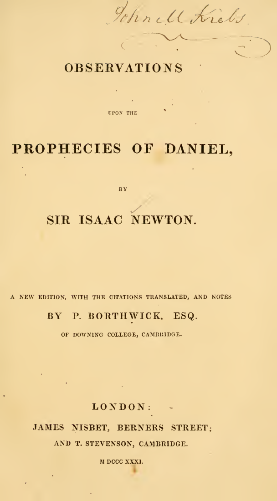

28:45 · 8 OPERE
Augias ed i pifferai del radioso presente.
Il filo del discorso
Dr Divago prende avvio da un breve video di Corrado Augias dedicato a Retrotopia di Bauman per discutere la contrapposizione fra nostalgia del passato e celebrazione del presente. Riproduce e interrompe alcuni brani, contestando il lessico adoperato e ciò che interpreta come un invito ad accettare l’epoca attuale quale migliore delle precedenti. Il confronto con il film Midnight in Paris e con Pangloss introduce una critica dell’ottimismo trasformato in ideologia. La cultura, per il relatore, dovrebbe invece rendere visibili i limiti delle nostre convinzioni e confrontare le rappresentazioni con l’esperienza: l’inquinamento e il cambiamento climatico diventano esempi di realtà che il discorso pubblico può cercare di eludere. Voltaire’s Bastards di John Ralston Saul sostiene la riflessione sulla frammentazione delle conoscenze, mentre Carroll offre l’immagine satirica di una verità prodotta dalla semplice ripetizione. La seconda parte difende la lettura diretta degli autori contro riassunti selettivi e richiama gli interessi teologici e alchemici di Newton per mostrare la complessità delle figure storiche. Dalla specializzazione nelle lingue e nella medicina, il discorso torna infine all’intrattenimento e agli slogan, con Postman e la Dialettica dell’illuminismo. La scheda distingue questa polemica dall’effettivo contenuto dei testi e dai dati scientifici e bibliografici riscontrati.
I libri nel discorso

Retrotopia
Copertina: Laterza · Economica 911 · 2020
Immagine autentica dell’opera, controllata visivamente; non identifica l’edizione usata nel video.
Zygmunt Bauman, Retrotopia, titolo e autore espliciti nella presentazione e nell’estratto del video di Augias.
Passaggio 0:54 ↗ · Fonti e libro ↗
Candido o l’ottimismo
Identificazione probabile
Copertina: Feltrinelli · Universale Economica I Classici · 2013 · traduzione di Stella Gargantini
Immagine autentica dell’opera, controllata visivamente; l’edizione di riferimento non è attribuita al filmato.
Pangloss e il migliore dei mondi possibili: rinvio identificabile a Candido, titolo non pronunciato.
Passaggio 6:11 ↗ · Fonti e libro ↗I bastardi di Voltaire. Voltaire’s Bastards: The Dictatorship of Reason in the West
Copertina: Simon & Schuster, 2 luglio 2013, 656 pagine, ISBN 9781476718965. Opera originale del 1992; traduzione italiana Bompiani 1994, 868 pagine, ISBN 9788845221903.
Copertina autentica inglese fornita dall’editore: fondo beige, fascia bianca con effetto carta strappata, titolo e autore leggibili. Non è la copertina Bompiani italiana né un’edizione riconosciuta dal fotogramma del video. La traduzione orale del passo non è attribuita automaticamente alla traduzione edita.
John Ralston Saul, Voltaire’s Bastards, titolo inglese esplicito e traduzione I bastardi di Voltaire; passo tradotto intorno a 1360 secondi.
Passaggio 8:38 ↗ · Fonti e libro ↗
I vestiti nuovi dell’imperatore
Identificazione probabile
Copertina: Rizzoli, 2014 · eBook di riferimento
La cultura dice che il re è nudo: allusione probabile alla fiaba, autore e titolo non pronunciati.
Passaggio 9:38 ↗ · Fonti e libro ↗
La caccia allo Snark
Copertina: Feltrinelli, Universale Economica I Classici, 22 febbraio 2018, a cura e traduzione di Roberto Sanesi, testo inglese a fronte, 112 pagine; ISBN 9788807902925. Originale del 1876.
Copertina autentica Feltrinelli, bianco e nero con personaggio al timone e titolo leggibile. Il video non identifica questa edizione; il titolo inglese e il passo sono verificati indipendentemente.
Lewis Carroll, The Hunting of the Snark, titolo esplicito e parafrasi del Bellman sulla frase ripetuta tre volte.
Passaggio 15:46 ↗ · Fonti e libro ↗
Observations upon the Prophecies of Daniel, and the Apocalypse of St. John
Identificazione probabile
Frontespizio dell’edizione parziale: Frontespizio della ristampa parziale Observations upon the Prophecies of Daniel, a cura di P. Borthwick, London, James Nisbet e T. Stevenson, 1831. Il volume completo originale in due parti uscì postumo nel 1733 presso J. Darby e T. Browne.
Frontespizio integrale autentico dell’edizione 1831 della sola parte su Daniele, renderizzato dalla prima pagina del facsimile. Non è una copertina esterna e non rappresenta la parte sull’Apocalisse inclusa nel volume originale 1733. Firma e segni del documento conservati; nessun ritaglio.
Newton e trattato su Daniele; identificazione probabile col volume postumo 1733, nessuna edizione specificata.
Passaggio 19:37 ↗ · Fonti e libro ↗
Divertirsi da morire. Il discorso pubblico nell’era dello spettacolo
Copertina: Luiss University Press · 2021 · prefazione di Matteo Bittanti
Immagine autentica dell’opera, controllata visivamente; non identifica l’edizione usata nel video.
Neil Postman, Amusing Ourselves to Death, esplicito; il relatore ricorda con incertezza la traduzione italiana.
Passaggio 27:24 ↗ · Fonti e libro ↗
Dialettica dell’illuminismo
Copertina: Einaudi, Piccola Biblioteca Einaudi, 2010
Edizione illustrativa dell'opera, con traduzione di Renato Solmi e introduzione di Carlo Galli; non identificata nel video.
Horkheimer e Adorno, Dialettica dell’illuminismo, esplicita, con parafrasi della trionfante sventura.
Passaggio 28:19 ↗ · Fonti e libro ↗Minutaggi ricavati da testi automatici, da riascoltare. Le identificazioni probabili sono segnalate accanto ai libri.